Sorghum and Cassava Flour Tortillas | Cooked | Oil-Free
Gluten-free, nut-free, grain-free, oil-free, fat-free, soy-free, sugar-free tortillas! Use these Sorghum and Cassava Tortillas as a bread substitute. Load them with veggies, guacamole, hummus, vegan cheese, or whatever your favorite spread may be. They will stand up to anything you throw at them, with no worries about them falling apart or tearing. They are flexible, bendable, rollable tortillas that have a mildly nutty flavor —a little reminiscent of flour tortillas, if you ask me.
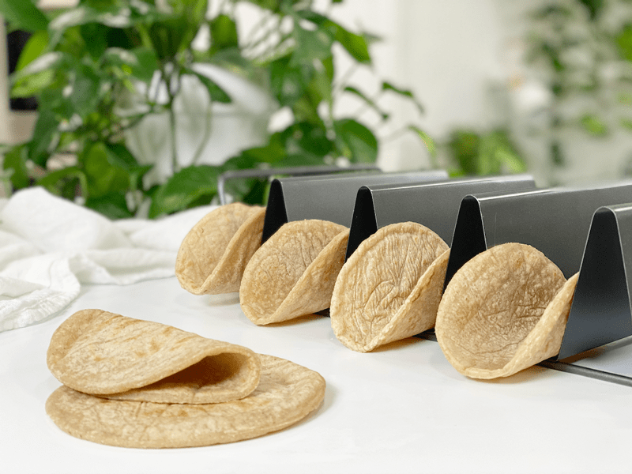
I have been enjoying my wrap/tortilla-making days. It never fails…as I am making one recipe, another one is brewing in my head. I can’t keep up with myself. With the music turned up in the studio, I spend hours tossing varieties of flour around like rose petals strewn at the feet of a queen.
Actually, what is really happening is that I am spilling flour on the floor as I walk through it. Every once in a while, Bob pokes his head in to check on me. “Having fun?” he asks as I toss tortillas on the griddle. “Oh yes indeed, you must come to watch them puff up!” I am like a giddy child in a toy Tonka Truck factory. I mean, really… look at these things! Of course, they deflate once you take them off the heat, but what fun!
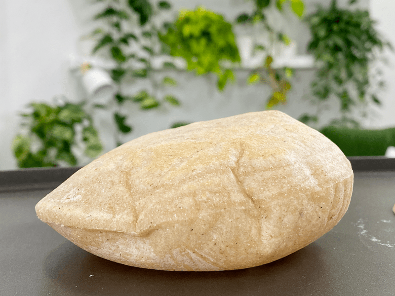
Ingredient Run-Down
Cassava Flour
- Cassava flour is made from the whole root, simply peeled, dried, and ground, leaving it full of fiber.
- Cassava flour is considered a resistant starch, which positively benefits the health of the digestive tract, feeds good bacteria, and reduces inflammation and bloating while promoting good digestion.
- Cassava flour is very mild and neutral in flavor. It’s light and fine, not grainy or gritty in texture. It’s soft and powdery, much like regular wheat flour.
Sorghum
- Sorghum has a hearty, nutty flavor that is perfect for these tortillas; its protein provides structure and stability for the dough, and its flavor is similar to wheat.
- Since sorghum does not contain gluten, a “binder” must be added when gluten is needed, which is why I added psyllium husks to the mix.
- Sorghum boasts an impressive nutrient profile. It’s a significant source of many vitamins and minerals, fiber, and protein, all of which contribute to good health.
- Sorghum promotes blood sugar balance and allows for slower digestion.
Psyllium Husks
- Psyllium has cooking superpowers. Its excellent pliability, gluten-like-structure, and undetectable flavor/color make it a staple in my pantry.
- I used psyllium husks, not the powder for this recipe.
- Due to its high fiber content, it’s often sold as a laxative, which can be good to know if you have a sensitive digestive system. In ratio to other ingredients, you don’t need to worry about these tortillas causing you to run to the bathroom.
- It is inexpensive and can be readily found in grocery stores. A little bit goes a long way!
- If you already have some on hand but it’s in full husk form, be sure to toss it in the grinder to create a fine flour texture.
- You can read more about it (here).
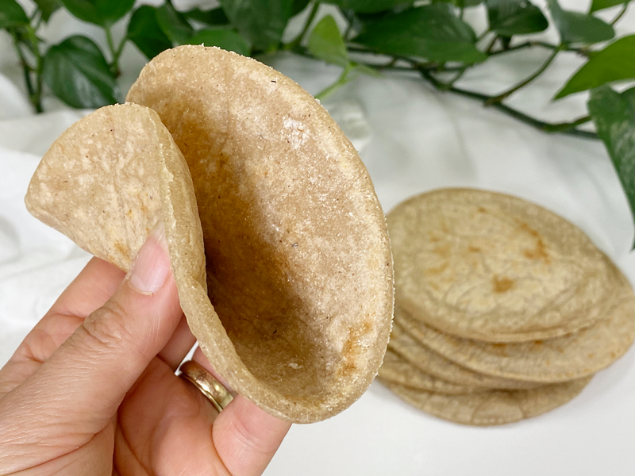
Check out that flexibility!
Tips and Techniques
Rolling the Tortillas
- When rolling out the tortillas, be sure to use even and steady pressure so that all sides and edges are the same thickness, so it will cook evenly.
- You don’t need to dust the parchment paper when rolling these out. The key is to knead the dough enough, making it easy to deal with. If the dough is sticking to the parchment paper, try kneading a bit longer. If you followed the measurements and kneading instructions, you shouldn’t have any issues.
- You can use anything to cut the circular shapes. I used a storage container lid. If you don’t want to deal with using a cutter, roll them out freestyle and cook them as-is.
Cooking the Tortillas
- Be sure to use a non-stick surface.
- Don’t cook these while distracted. You will want to be present while they are cooking so you can pay attention to when they need to be flipped.
- After both sides have cooked for 30-60 seconds, you will flip them once after cooking an additional 30 seconds each side. During these 30-second segments, press a flat spatula along the complete surface of the tortilla. You might hear squeaky sounds as you press small amounts of air from them. Soon, they should start to puff up. Once they start puffing and you see small tan dots on the surface, remove from the heat and let them cool on a cooling rack.
I hope you enjoy this recipe. Please be sure to leave a comment below. Sending you love and blessings, amie sue
 Ingredients:
Ingredients:
Yields 7 (5 1/2″ diameter)
- 2/3 cup cassava flour
- 1/3 cup sorghum flour
- 1 Tbsp psyllium husks
- 1/2 tsp sea salt
- 1 1/4 cups boiling water
Preparation
Making the Dough
- In a medium-sized bowl, whisk together the cassava flour, sorghum flour, psyllium husks, and salt. Make sure everything is thoroughly dispersed.
- Add the boiling water and stir together with a spoon. Don’t use the whisk, as it will turn into a nightmare getting the dough out of the spokes (I speak from experience).
- Let the dough sit for 5-10 minutes, until cool enough to handle.
- Knead the dough for 2-3 minutes. I held it in the palms of my hands, folding it over onto itself.
- Place the dough in the bowl and cover it with a towel. You will want to keep the dough covered while you roll out each tortilla shape, which will prevent it from drying out.
Rolling Out the Shapes and Cooking
- Preheat your non-stick cooking pan or surface. I used my pancake griddle so I could cook several at one time. I set the griddle to 400 degrees (F).
- Tear off 2 sheets of parchment paper, laying one down in front of you.
- Pinch off a large ball of dough, knead it in your hands, and set it down in the center of parchment paper in front of you. Flatten it slightly with your hand.
- Place the other sheet of parchment paper on top of the dough and with a rolling pin, flatten the dough in a circular shape until it is about 1/4″ thick or less.
- If it is too thick, the end texture will be gummy. If too thin, it won’t peel off the parchment paper successfully.
- Cut out the shape using a large circular cutter. I used the lid to one of my glass storage containers (see photo).
- Place the excess dough back into the bowl and cover it back up with the towel.
Cooking the Tortillas
- Place the tortilla on the preheated surface. No oil should be needed.
- While it is cooking, you should have time to create another one.
- I found that I can cook two just fine, keeping a flow between creating the tortilla, cooking, and flipping.
- Cook the first side for 30-60 seconds (small tan dots should be forming on the underside).
- Flip and cook for 30-60 seconds, pressing down on the surface of the tortilla.
- Flip and cook for about 30 seconds more. At this point, keep pressing down all over the tortilla; soon it will start to puff up.
- Each one is different, so stay flexible!
- Once it has puffed up, remove it from the heat, placing it on a cooling rack, covering it with a towel.
- Repeat the whole process until all the dough is rolled out and cooked.
Storing Tortillas
- These are delicious served warm right after cooking, but they are equally good as leftovers.
- To store the tortillas, make sure that they are fully cooled (or they will create condensation, which equals sogginess). Layer pieces of parchment paper between each wrap in an airtight container.
- They can be stored in the refrigerator for 5-6 days or in the freezer for 2-3 months.
- If frozen, allow them to come to room temperature.
- They can be reheated briefly on a warm skillet, or enjoyed chilled or at room temperature.
-
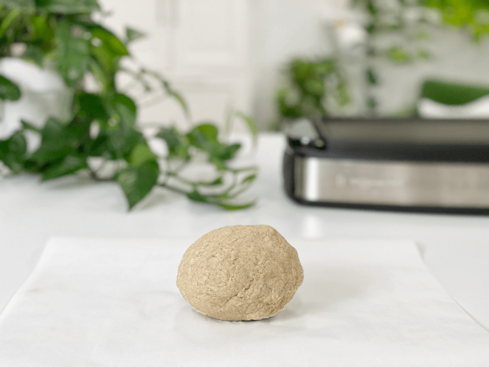
-
Be sure to knead the dough for several minutes. I do this by holding it in my hands, folding it over and over onto itself.
-
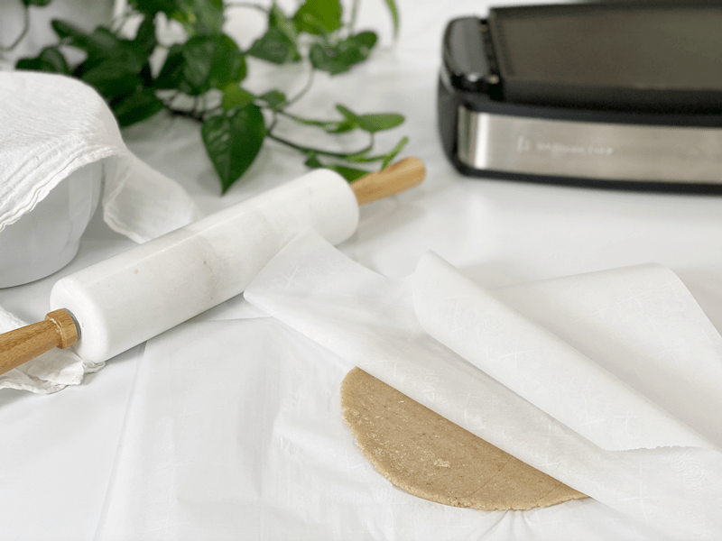
-
Roll the dough out between 2 sheets of parchment paper to 1/8-1/4″ thickness.
-
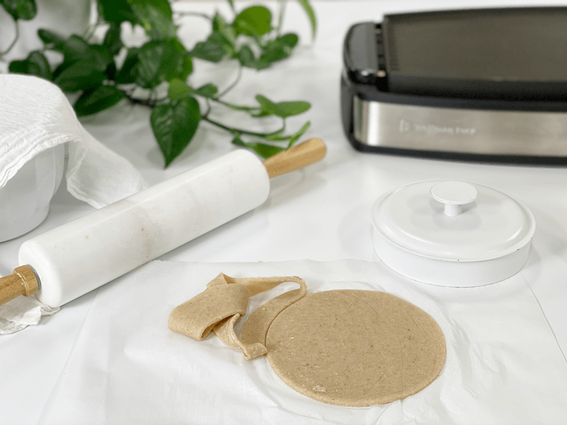
-
Remove the excess dough and place the tortilla on the preheated pan.
-
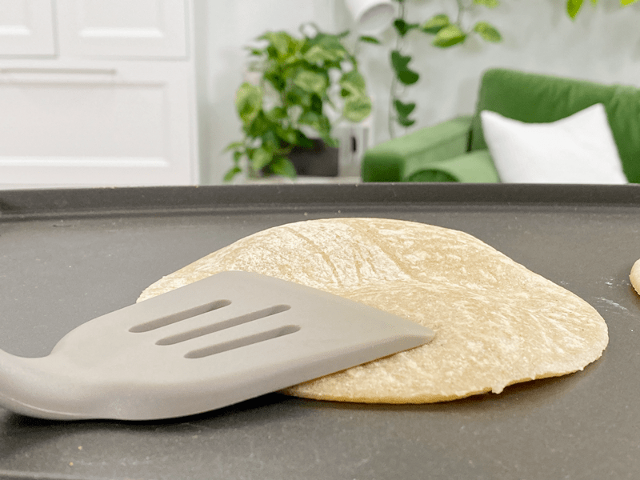
-
After both sides have cooked for 30-60 seconds, press evenly over the entire surface of the tortilla. This will help start the puffing action.
-
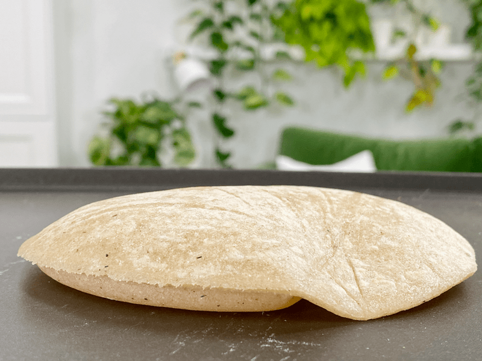
-
Gently press the air pockets, encouraging them to expland.
-
-
And before you know it… PUFF!
-
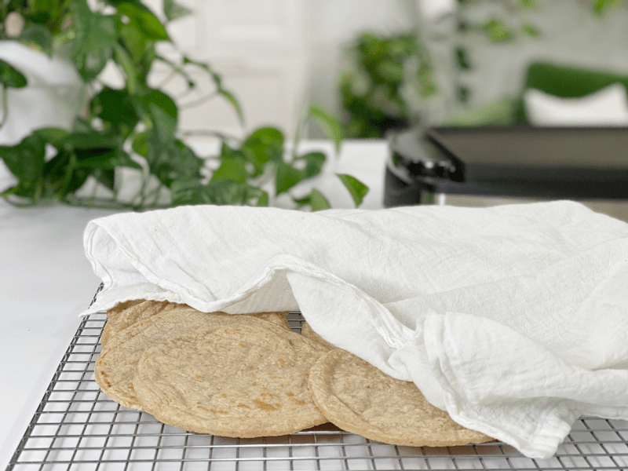
-
Once they are done cooking, place them on a cooling rack and keep them covered with a towel.
-
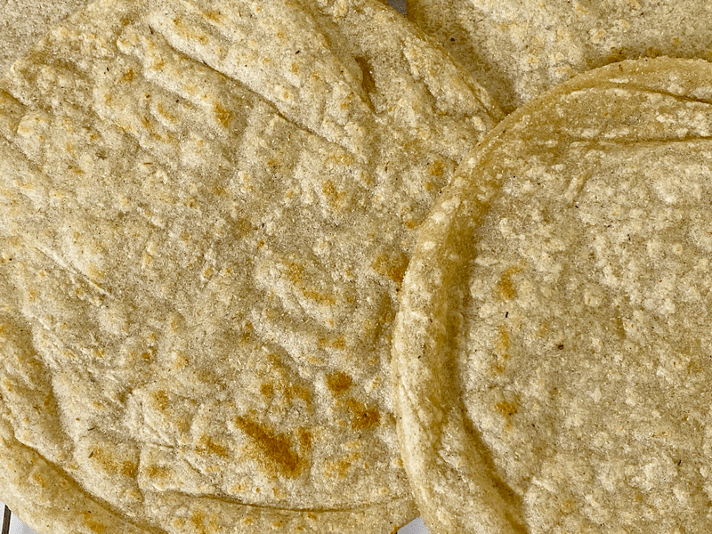
-
Not pretty, but I wanted to show you what they look like once cooked. I thought the visual would help you understand what you are trying to achieve.
-
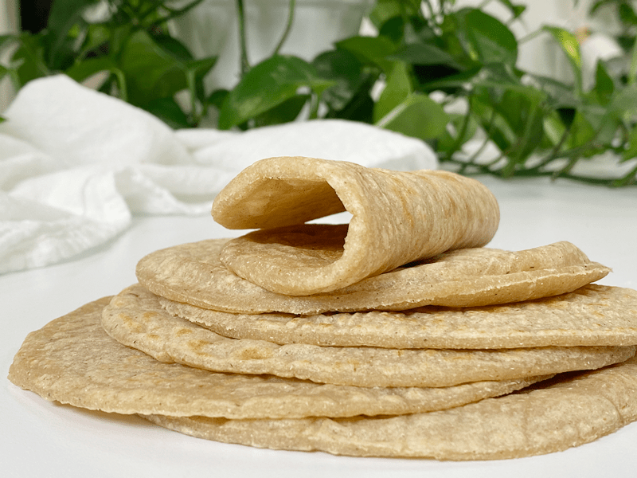
-
Just demonstrating how pliable they are. Enjoy!
© AmieSue.com